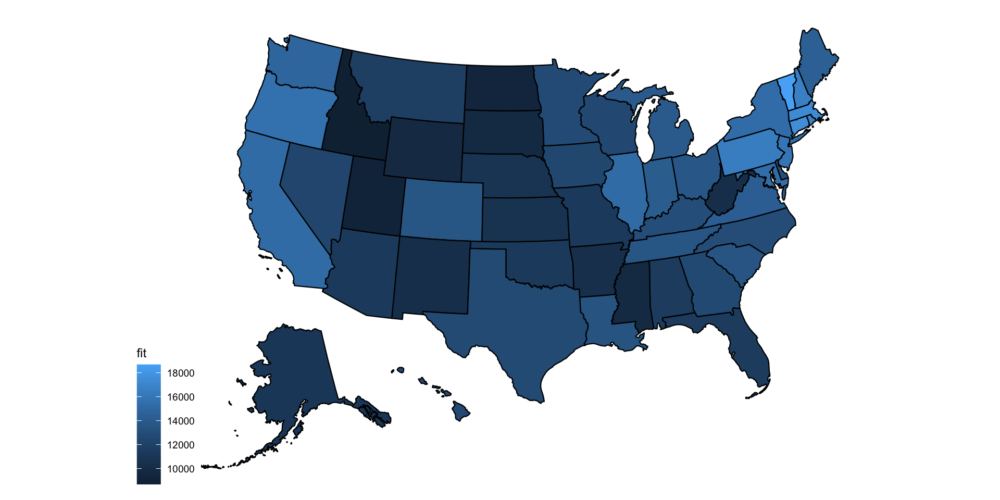
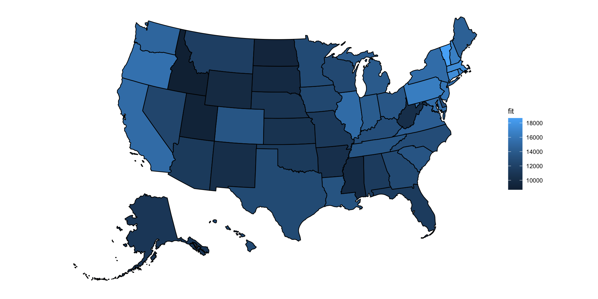
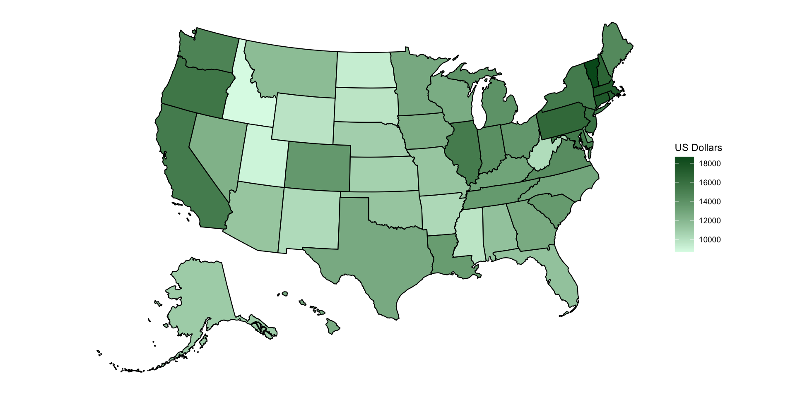
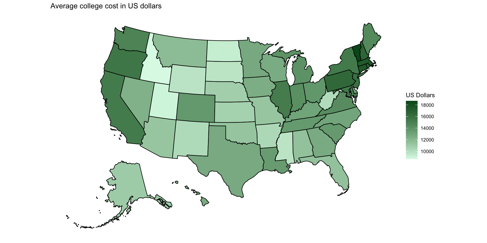

Download the data on average cost of undergraduate student by state USA and set up your working environment. Make sure all columns names are lowercased.
What affects college cost?
How does college cost vary by state?
We will run linear regression with value as our response variable, and the other variables are predictors
Call:
lm(formula = value ~ state + year + expense + type + length,
data = college_cost)
Residuals:
Min 1Q Median 3Q Max
-14624 -3355 -488 3134 19403
Coefficients:
Estimate Std. Error t value Pr(>|t|)
(Intercept) -8.996e+05 6.459e+04 -13.927 < 2e-16 ***
stateAlaska -4.559e+02 8.421e+02 -0.541 0.588306
stateArizona -1.668e+02 8.164e+02 -0.204 0.838139
stateArkansas -1.129e+03 8.164e+02 -1.383 0.166797
stateCalifornia 3.834e+03 8.164e+02 4.696 2.75e-06 ***
stateColorado 2.154e+03 8.164e+02 2.639 0.008352 **
stateConnecticut 6.072e+03 8.164e+02 7.438 1.28e-13 ***
stateDelaware 1.502e+03 8.495e+02 1.768 0.077065 .
stateDistrict of Columbia 1.834e+03 1.007e+03 1.820 0.068845 .
stateFlorida -6.634e+00 8.164e+02 -0.008 0.993517
stateGeorgia 1.200e+03 8.164e+02 1.470 0.141581
stateHawaii 1.162e+03 8.164e+02 1.423 0.154864
stateIdaho -2.754e+03 8.164e+02 -3.373 0.000752 ***
stateIllinois 3.805e+03 8.164e+02 4.661 3.27e-06 ***
stateIndiana 2.704e+03 8.164e+02 3.312 0.000936 ***
stateIowa 1.041e+03 8.164e+02 1.275 0.202341
stateKansas -7.733e+02 8.164e+02 -0.947 0.343598
stateKentucky 1.579e+03 8.164e+02 1.934 0.053239 .
stateLouisiana 1.993e+03 8.164e+02 2.441 0.014691 *
stateMaine 3.016e+03 8.164e+02 3.695 0.000224 ***
stateMaryland 3.970e+03 8.164e+02 4.863 1.21e-06 ***
stateMassachusetts 5.919e+03 8.164e+02 7.251 5.07e-13 ***
stateMichigan 2.519e+03 8.164e+02 3.086 0.002046 **
stateMinnesota 1.280e+03 8.164e+02 1.567 0.117113
stateMississippi -1.706e+03 8.164e+02 -2.089 0.036756 *
stateMissouri -1.880e+02 8.164e+02 -0.230 0.817894
stateMontana 2.962e+02 8.164e+02 0.363 0.716745
stateNebraska -6.609e+02 8.164e+02 -0.810 0.418234
stateNevada 8.436e+02 8.351e+02 1.010 0.312505
stateNew Hampshire 5.198e+03 8.164e+02 6.367 2.18e-10 ***
stateNew Jersey 4.496e+03 8.164e+02 5.507 3.90e-08 ***
stateNew Mexico -1.248e+03 8.164e+02 -1.529 0.126366
stateNew York 3.921e+03 8.164e+02 4.802 1.63e-06 ***
stateNorth Carolina 1.481e+03 8.164e+02 1.814 0.069718 .
stateNorth Dakota -2.135e+03 8.164e+02 -2.615 0.008955 **
stateOhio 2.258e+03 8.164e+02 2.766 0.005705 **
stateOklahoma -1.475e+02 8.164e+02 -0.181 0.856623
stateOregon 4.171e+03 8.164e+02 5.109 3.41e-07 ***
statePennsylvania 5.006e+03 8.164e+02 6.132 9.63e-10 ***
stateRhode Island 5.339e+03 8.164e+02 6.540 7.06e-11 ***
stateSouth Carolina 2.084e+03 8.164e+02 2.553 0.010727 *
stateSouth Dakota -1.716e+03 8.164e+02 -2.102 0.035661 *
stateTennessee 2.120e+03 8.164e+02 2.597 0.009437 **
stateTexas 1.234e+03 8.164e+02 1.511 0.130841
stateUtah -2.444e+03 8.164e+02 -2.994 0.002773 **
stateVermont 7.234e+03 8.164e+02 8.861 < 2e-16 ***
stateVirginia 2.825e+03 8.164e+02 3.460 0.000546 ***
stateWashington 3.367e+03 8.164e+02 4.125 3.80e-05 ***
stateWest Virginia -1.282e+03 8.164e+02 -1.571 0.116294
stateWisconsin 1.137e+03 8.164e+02 1.392 0.163906
stateWyoming -1.676e+03 8.615e+02 -1.946 0.051760 .
year 4.508e+02 3.202e+01 14.079 < 2e-16 ***
expenseRoom/Board -9.711e+03 1.886e+02 -51.475 < 2e-16 ***
typePublic In-State -8.319e+03 2.219e+02 -37.496 < 2e-16 ***
typePublic Out-of-State -2.061e+03 2.194e+02 -9.394 < 2e-16 ***
length4-year 1.229e+04 2.234e+02 55.015 < 2e-16 ***
---
Signif. codes: 0 '***' 0.001 '**' 0.01 '*' 0.05 '.' 0.1 ' ' 1
Residual standard error: 4864 on 3492 degrees of freedom
Multiple R-squared: 0.6947, Adjusted R-squared: 0.6899
F-statistic: 144.5 on 55 and 3492 DF, p-value: < 2.2e-16Let’s save the effect of state to a data frame, so we can plot the results:
First we need to load the usmap library (run install.packages("usmap") to install it).
Then we can plot our results:
We can move the legend to the right:
We can add a light color for low numbers, and a dark color for high values:
We can add a title:
Adding labels – we need to get centroids first.
Then we plot it:
plot_usmap(data = by_state,
values = "fit", include = c("MA", "CT", "RI", "NJ", "NY", "PA")) +
theme(legend.position = "right") +
scale_fill_continuous(name = "US Dollars",
low = "#dcfae7",
high = "#005721") +
geom_sf_text(aes(label = round(fit/1000))) +
labs(title = "Average college cost in thousands of US dollars")library(tilemaps)
library(sf)
full_data <- governors |>
mutate(tile_map = generate_map(geometry, square = FALSE, flat_topped = TRUE)) |>
full_join(statepop, by = join_by(abbreviation == abbr)) |>
rename("state" = full)
full_data <- by_state |>
left_join(full_data)
full_data |>
ggplot(aes(geometry = tile_map, label = paste(abbreviation,round(fit/1000)),
fill = fit)) +
geom_sf() +
geom_sf_text(fun.geometry = function(x) st_centroid(x)) +
scale_fill_continuous(name = "US Dollars",
low = "#dcfae7",
high = "#005721") +
theme_void()